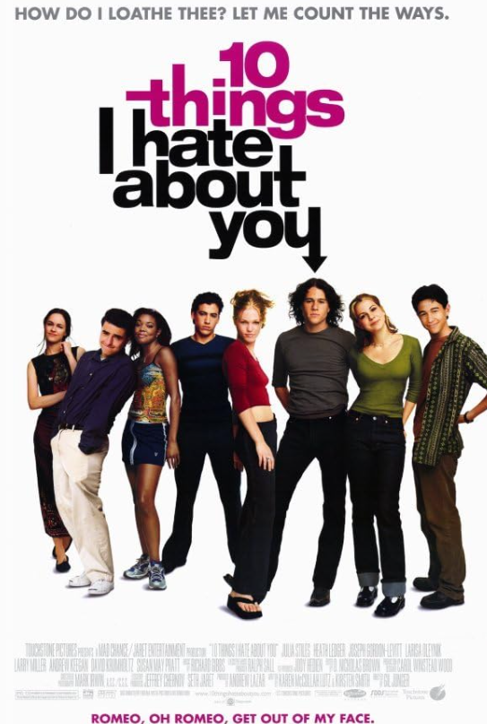

FILMES MAIS VISTOS
|

|
|
|
|
|
| Avatar (2009) |
Vingadores: Ultimato (2019) |
Avatar: O Caminho da Água (2022) |
Titanic (1997) |
Star Wars: O Despertar da Força (2015) |
| Ficção Científica/Ação |
Ficção Científica/Ação |
Ficção Científica/Ação |
Romance/Aventura |
Ficção Científica/Ação |
| Saiba
mais |
FILMES RECOMENDADOS PARA VOCÊ
|
|

|
|
|
|
|
| 10 Coisas que Eu Odeio em Você (1999) |
Mamma Mia! (2008) |
Interestelar (2014) |
Legalmente Loira (2001) |
Top Gun - Ases Indomáveis (1986) |
| Comédia/Romance |
Musical/Comédia |
Ficção Científica/Aventura |
Comédia/Romance |
Ação/Aventura |
| Saiba
mais |